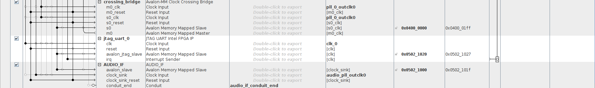
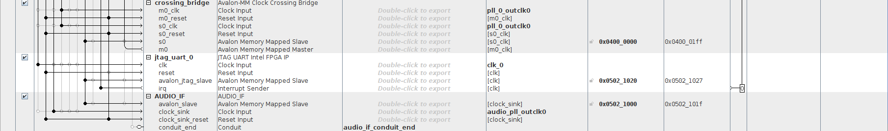

Áudio na DE10¶
- Alunes: Francisco Ciol R. Aveiro
- Curso: Engenharia da Computação
- Semestre: 9
- Contato: franciscocra@al.insper.edu.br
- Ano: 2020
Começando¶
Para seguir esse tutorial é necessário:
- Hardware:
- DE10-Standard e acessórios
- Cabo auxiliar de audio(P2)
- Softwares: Quartus 18.01
- Documentos: DE10-Standard_User_manual.pdf
Motivação¶
A motivação desse projeto é poder trabalhar com processamento de Audio em tempo real usando o o CODEC de audio do DE10-Standard. Por conta da complexidade necessária para desenvolver todas as partes necessárias para esse projeto, esse tutorial vai se basear no exemplo de Audio da propria placa 'Audio Recording and Playing', e com isso criar um projeto que dê base para tratar o audio em tempo real.
Periférico Inicial¶
Para começar, crie um novo projeto vazio no Quartus. Uma vez criado o projeto, vamos começar criando o IP do próprio exemplo da Terasic('Audio Recording and Playing'). Para criar o IP, baixe o arquivo compactado a seguir:
Descompacte e coloque a pasta dentro do diretório IP do projeto(caso não exista, crie ele). Dentro de TERASIC_AUDIO use os arquivos AUDIO_IF.v, AUDIO_DAC.v, AUDIO_ADC.v e audio_fifo.v na criação do IP, garantindo que o AUDIO_IF.v seja o TOP level.
Platform Designer¶
Uma vez que o IP foi adicionado ao projeto, dentro da pasta 'IP', vamos cuidar do PD(Platform Designer) desse projeto. Para isso precisamos adicionar os seguintes componentes:
-
AUDIO_IF: (AUDIO_IF)
-
On-Chip Memory(RAM or ROM) Intel FPGA IP: (onchip_memory)
- Alterar o Total memory size para 64000.
-
PLL Intel FPGA IP: (audio_pll)
- PLL de Audio.
- Alterar o PLL Mode para Fractional-N PLL.
- Alterar Reference Clock Frequency para 50.0 MHz.
- Alterar Number of Clocks para 1.
- Alterar o Desired Frequency para 18.432 MHz.
-
PLL Intel FPGA IP: (pll_0)
- PLL dos outros componentes.
- Alterar o PLL Mode para Fractional-N PLL.
- Alterar Reference Clock Frequency para 50.0 MHz.
- Alterar Number of Clocks para 3.
- Alterar o Desired Frequency do outclk0 para 100 MHz.
- Alterar o Desired Frequency do outclk1 para 100 MHz.
- Alterar o Phase Shift units do outclk1 para degrees.
- Alterar o Phase Shift do outclk1 para -90.
- Alterar o Desired Frequency do outclk2 para 10 MHz.
-
Nios II Processor: (nios2_gen2)
- Precessador NIOS.
- Escolher o Nios II/e.
-
SDRAM Controller Intel FPGA IP: (sdram_controller)
- Alterar Data Width para 16 Bits.
- Alterar ROW para 13.
- Alterar Column para 10.
-
PIO (Parallel I/O) Intel FPGA IP: (i2c_sclk)
- Alterar Width para 1.
- Alterar Direction para Output.
-
PIO (Parallel I/O) Intel FPGA IP: (i2c_sdat)
- Alterar Width para 1.
- Alterar Direction para Bidir.
-
Avalon-MM Clock Crossing Bridge: (crossing_bridge)
- Alterar Data width para 32.
- Alterar Symbol width para 8.
- Alterar Address width para 9.
- Alterar Command FIFO depth para 32.
- Alterar Response FIFO depth para 64.
- Alterar Master clock domainsynchronizer depth para 3.
- Alterar Slave clock domainsynchronizer depth para 3.
-
JTAG UART Intel FPGA IP: (jtag_uart_0)
Conectar as periféricos conforme as seguintes imagens:
 

Uma vez feito isso, gere o HDL.
Esse projeto faz uso do Avalon-MM Clock Crossing Bridge para que os dados do periférico de audio fiquem assincronos ao processador. Então o PIO I2C alimenta o Avalon-MM Clock Crossing Bridge e quando o 'buffer' dele estiver cheio, o processador pode puxar essa informação. Da mesma forma o processador pode enviar toda a informação de audio em um grande pacote e esse pacote é então tocado de forma assincrona do processador.
Main VHDL¶
Assim que for gerado o PD, volte para o TOP-FILE do seu projeto VHDL e coloque o seguinte código
Codigo
library IEEE;
use IEEE.std_logic_1164.all;
entity AUDIO_LIVE is
port (
fpga_clk_50 : in std_logic;
AUD_XCK : out std_logic;
AUD_ADCDAT : in std_logic;
AUD_ADCLRC : in std_logic;
AUD_DACDAT : out std_logic;
AUD_DACLRC : in std_logic;
AUD_BCLK : in std_logic;
I2C_AUD_DATA : inout std_logic;
I2C_AUD_CLK : out std_logic;
sdram_addr : out std_logic_vector(12 downto 0);
sdram_ba : out std_logic_vector(1 downto 0);
sdram_cas_n : out std_logic;
sdram_cke : out std_logic;
sdram_cs_n : out std_logic;
sdram_dq : inout std_logic_vector(15 downto 0) := (others => 'X');
sdram_dqm : out std_logic_vector(1 downto 0);
sdram_ras_n : out std_logic;
sdram_ew_n : out std_logic;
sdram_pll : out std_logic
);
end entity;
architecture lv1 of AUDIO_LIVE is
component PD_AUDIO_LIVE_F is
port (
audio_if_conduit_end_XCK : out std_logic; -- XCK
audio_if_conduit_end_ADCDAT : in std_logic := 'X'; -- ADCDAT
audio_if_conduit_end_ADCLRC : in std_logic := 'X'; -- ADCLRC
audio_if_conduit_end_DACDAT : out std_logic; -- DACDAT
audio_if_conduit_end_DACLRC : in std_logic := 'X'; -- DACLRC
audio_if_conduit_end_BCLK : in std_logic := 'X'; -- BCLK
clk_clk : in std_logic := 'X'; -- clk
i2c_sclk_external_connection_export : out std_logic; -- export
i2c_sdat_external_connection_export : inout std_logic := 'X'; -- export
sdram_controller_wire_addr : out std_logic_vector(12 downto 0); -- addr
sdram_controller_wire_ba : out std_logic_vector(1 downto 0); -- ba
sdram_controller_wire_cas_n : out std_logic; -- cas_n
sdram_controller_wire_cke : out std_logic; -- cke
sdram_controller_wire_cs_n : out std_logic; -- cs_n
sdram_controller_wire_dq : inout std_logic_vector(15 downto 0) := (others => 'X'); -- dq
sdram_controller_wire_dqm : out std_logic_vector(1 downto 0); -- dqm
sdram_controller_wire_ras_n : out std_logic; -- ras_n
sdram_controller_wire_we_n : out std_logic; -- we_n
pll_sdam_clk : out std_logic; -- clk
reset_reset_n : in std_logic := 'X' -- reset_n
);
end component PD_AUDIO_LIVE_F;
begin
u0 : component PD_AUDIO_LIVE_F
port map (
audio_if_conduit_end_XCK => AUD_XCK, -- audio_if_0_conduit_end.XCK
audio_if_conduit_end_ADCDAT => AUD_ADCDAT, -- .ADCDAT
audio_if_conduit_end_ADCLRC => AUD_ADCLRC, -- .ADCLRC
audio_if_conduit_end_DACDAT => AUD_DACDAT, -- .DACDAT
audio_if_conduit_end_DACLRC => AUD_DACLRC, -- .DACLRC
audio_if_conduit_end_BCLK => AUD_BCLK, -- .BCLK
clk_clk => fpga_clk_50, -- clk.clk
i2c_sclk_external_connection_export => I2C_AUD_CLK, -- i2c_sclk_external_connection.export
i2c_sdat_external_connection_export => I2C_AUD_DATA, -- i2c_sdat_external_connection.export
sdram_controller_wire_addr => sdram_addr, -- new_sdram_controller_0_wire.addr
sdram_controller_wire_ba => sdram_ba, -- .ba
sdram_controller_wire_cas_n => sdram_cas_n, -- .cas_n
sdram_controller_wire_cke => sdram_cke, -- .cke
sdram_controller_wire_cs_n => sdram_cs_n, -- .cs_n
sdram_controller_wire_dq => sdram_dq, -- .dq
sdram_controller_wire_dqm => sdram_dqm, -- .dqm
sdram_controller_wire_ras_n => sdram_ras_n, -- .ras_n
sdram_controller_wire_we_n => sdram_ew_n, -- .we_n
pll_sdam_clk => sdram_pll, -- pll_sdam.clk
reset_reset_n => '1' -- reset.reset_n
);
end lv1;
Esse código faz a ligação de todas as portas do PD que foi feito, com as saídas necessárias para funcionar o projeto.
Após isso, faça o PIN PLANNER da conforme a seguinte imagem:

Compile o projeto e coloque na placa.
Nota
Essa parte pode demorar por volta de 10 minutos, portanto aproveite para tomar uma água.
Software¶
Abra o NIOS II SOdtware build tools for Eclipse e inicie um projeto novo com template de hello_world. Feito isso, configure o BSP_EDITOR. Com o BSP configurado e gerado, adicione os arquivos a seguir no projeto.
Esse arquivos são os que interfaceiam diretamente com o hardware e é a partir das funções deles que faremos o projeto. - O AUDIO_REG.h serve para interfacear diretamente com o componente AUDIO_IF. Dali ele busca os dados de audio e envia de volta. - O I2C.h e o I2C.c servem para fazer a configuração e interface com os componentes I2C. - O AUDIO.c e o AUDIO.h usam as funções dos arquivos acima para facilitar e criar as funções que usaremos diretamente no nosso código. A partir deles configuraremos o hardware de audio.
Info
Talvez seja necessário verificar nos arquivos que vieram do projeto original, se os endereços de SDRAM, AUDIO_IF, e outros periféricos estão definidos corretamente, conforme apresentado no arquivo system.h.
Para começar, importamos tudo o que é preciso e definimos o tamnho dos blocos associados
#include <stdio.h>
#include "terasic_includes.h"
#include "AUDIO.h"
#include <math.h>
#define RECORD_BLOCK_SIZE 250 // ADC FIFO: 512 byte
#define PLAY_BLOCK_SIZE 250 // DAC FIFO: 512 byte
Depois entramos na função main. Começamos declarando as variaveis a serem usadas, e tambem já usamos as funções dos arquivos de cima para configurar a interface.
alt_u32 *pBuf, *pPlaying, *pRecording, buf_sample_size, data, RecordLen;
int i = 0;
pBuf = (alt_u32 *)NEW_SDRAM_CONTROLLER_0_BASE;
printf("Hello from THE Nios II!\n\na\n");
alt_u16 ch_right, ch_left;
AUDIO_Init(); // Inicializa a interface
AUDIO_FifoClear(); // Limpa o Buffer do FIFO
AUDIO_InterfaceActive(FALSE); // Desabilita a interface para poder alterar configuração
AUDIO_SetInputSource(SOURCE_LINEIN); // seleciona o input
AUDIO_DacEnableSoftMute(TRUE); // muta para não dar picos no audio
AUDIO_MicMute(TRUE); // Muta a entrada que não vai usar
AUDIO_LineInMute(FALSE); // Deixa aberta aentrada a ser usada
AUDIO_SetLineInVol(0x17, 0x17); // Configura o volume de saída
AUDIO_SetSampleRate(RATE_ADC32K_DAC32K); // Configura o Sample rate a ser usado
AUDIO_DacEnableZeroCross(FALSE);
AUDIO_SetLineOutVol(0x64, 0x7F); // max 7F, min: 30, 0x79: 0 db
AUDIO_DacEnableSoftMute(FALSE); // Desabilita o mute pós configuracao
AUDIO_FifoClear(); // Limpa o Buffer do FIFO
AUDIO_InterfaceActive(TRUE); // Ativa a interface
int idx_1,idx_2 = 0; // Index dentro da memoria
pRecording = pBuf; // espaco de memoria a receber a gravacao
pPlaying = pBuf; // Espaco da memoria a ser lido
Depois disso, entramos no loop que vai ficar rodando. Nele podemos verificar se tem dados de audio para puxar, e então enviar de volta para a saída esses dados.
if(AUDIO_AdcFifoNotEmpty()){ // verifica se tem informação de audio a ser lida
AUDIO_AdcFifoGetData(&ch_left, &ch_right); // le o audio
}
if (AUDIO_DacFifoNotFull()) { // verifica se pode escrever na entrada
AUDIO_DacFifoSetData(ch_right, ch_left); // envia o audio
}
if(AUDIO_AdcFifoNotEmpty()){ // verifica se tem informação de audio a ser lida
AUDIO_AdcFifoGetData(&ch_left, &ch_right); // le o audio
data = (ch_left << 16) | ch_right; // prepara para gravar
*pRecording++ = data; // grava e já ajusta para a proxima posição
idx_1++; // move o indice 1
if(idx_1>=RECORD_BLOCK_SIZE){ // caso termine o espaco de memoria, volte para o comeco e sobreescreve lá
idx_1 = 1;
pRecording = pBuf;
}
}
// Espaço de processamento do audio
if(AUDIO_DacFifoNotFull() & (idx_1 > 0 & idx_1-idx_2 != 0)) // verifica se pode escrever na entrada e se já tem o que ler na memoria
{
data = *pPlaying++; // le a memoria e prepara para proximo pedaco de memoria
ch_left = data >> 16; // separa os canais
ch_right = data & 0xFFFF;
AUDIO_DacFifoSetData(ch_right, ch_left); // envia o audio
idx_2++; // atualiza o index do player
if(idx_2>=PLAY_BLOCK_SIZE){ // caso termine o espaco de memoria, volte para o comeco e lê de lá
idx_2 = 1;
pPlaying = pBuf;
}
}
Assim salvamos esses dados na sdram, e podemos processar eles a parte, causando um pequeno atraso na saída do sinal.
Abaixo segue o código completo.
#include <stdio.h>
#include "terasic_includes.h"
#include "AUDIO.h"
#include <math.h>
#define RECORD_BLOCK_SIZE 250 // ADC FIFO: 512 byte
#define PLAY_BLOCK_SIZE 250 // DAC FIFO: 512 byte
int main()
{
alt_u32 *pBuf, *pPlaying, *pRecording, buf_sample_size, data, RecordLen;
int i = 0;
pBuf = (alt_u32 *)NEW_SDRAM_CONTROLLER_0_BASE;
printf("Hello from THE Nios II!\n\na\n");
alt_u16 ch_right, ch_left;
AUDIO_Init(); // Inicializa a interface
AUDIO_FifoClear(); // Limpa o Buffer do FIFO
AUDIO_InterfaceActive(FALSE); // Desabilita a interface para poder alterar configuração
AUDIO_SetInputSource(SOURCE_LINEIN); // seleciona o input
AUDIO_DacEnableSoftMute(TRUE); // muta para não dar picos no audio
AUDIO_MicMute(TRUE); // Muta a entrada que não vai usar
AUDIO_LineInMute(FALSE); // Deixa aberta aentrada a ser usada
AUDIO_SetLineInVol(0x17, 0x17); // Configura o volume de saída
AUDIO_SetSampleRate(RATE_ADC32K_DAC32K); // Configura o Sample rate a ser usado
AUDIO_DacEnableZeroCross(FALSE);
AUDIO_SetLineOutVol(0x64, 0x7F); // max 7F, min: 30, 0x79: 0 db
AUDIO_DacEnableSoftMute(FALSE); // Desabilita o mute pós configuracao
AUDIO_FifoClear(); // Limpa o Buffer do FIFO
AUDIO_InterfaceActive(TRUE); // Ativa a interface
int idx_1,idx_2 = 0; // Index dentro da memoria
pRecording = pBuf; // espaco de memoria a receber a gravacao
pPlaying = pBuf; // Espaco da memoria a ser lido
while (1)
{
if(AUDIO_AdcFifoNotEmpty()){ // verifica se tem informação de audio a ser lida
AUDIO_AdcFifoGetData(&ch_left, &ch_right); // le o audio
data = (ch_left << 16) | ch_right; // prepara para gravar
*pRecording++ = data; // grava e já ajusta para a proxima posição
idx_1++; // move o indice 1
if(idx_1>=RECORD_BLOCK_SIZE){ // caso termine o espaco de memoria, volte para o comeco e sobreescreve lá
idx_1 = 1;
pRecording = pBuf;
}
}
// Espaço de processamento do audio
if(AUDIO_DacFifoNotFull() & (idx_1 > 0 & idx_1-idx_2 != 0)) // verifica se pode escrever na entrada e se já tem o que ler na memoria
{
data = *pPlaying++; // le a memoria e prepara para proximo pedaco de memoria
ch_left = data >> 16; // separa os canais
ch_right = data & 0xFFFF;
AUDIO_DacFifoSetData(ch_right, ch_left); // envia o audio
idx_2++; // atualiza o index do player
if(idx_2>=PLAY_BLOCK_SIZE){ // caso termine o espaco de memoria, volte para o comeco e lê de lá
idx_2 = 1;
pPlaying = pBuf;
}
}
}
return 0;
}